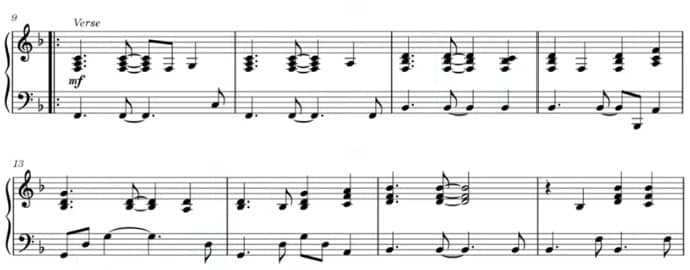
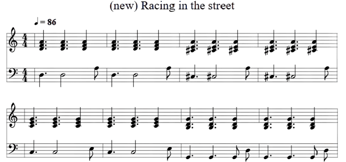

🎵 Listen to Bruce Springsteen singing his iconic 1978 song against a different harmony
Dm
I got a sixty-nine Chevy with a three-ninety-six
A/C#
Fuelie heads and a Hurst on the floor
C
She's waiting tonight down in the parking lot
G
Outside the Seven-Eleven store
Reharmonizing /riːˈhɑː.mə.naɪz/ taking an existing melodic line and altering the harmony that accompanies it
Search for “racing in the street springsteen mp3” and you will find it everywhere: Amazon, Spotify, YouTube, Apple Music, ... I got mine from YouTube [1]
Use a tool to isolate the vocal track from the rest of the audio. I have used Vocal Remover [2] and this was the result:
I found a faithful piano transcription on YouTube [3]. The 🎹 piano piece is Roy Bittan at his best, using a 3-3-2 rhythmic pattern within a chord progression F, B♭, Gm, B♭

Create a new chord progression that, somehow, fits with the melody. I come up with Dm, A/C#, C, G
Use a tool to write the new piano section.
I used the abc notation[4] and the abctools online editor[5] and come out with this new score:

and exported the result as a .wav file
Combine the two tracks: Bruce's isolated voice and your newly written piano section. I used Audacity [6] for it